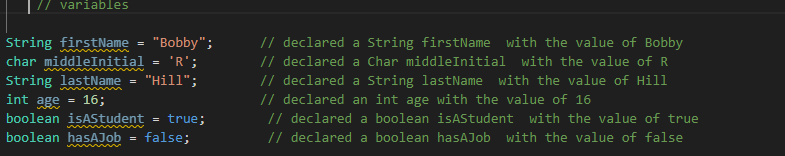
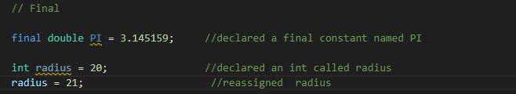
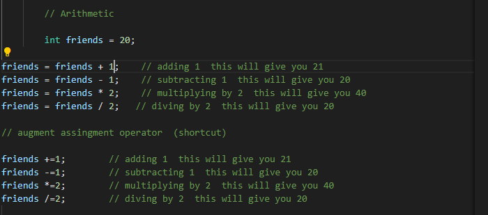
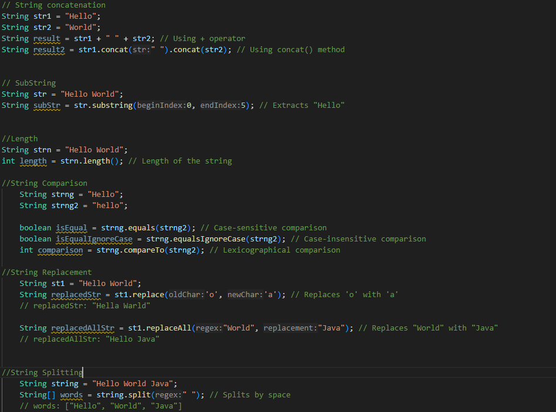
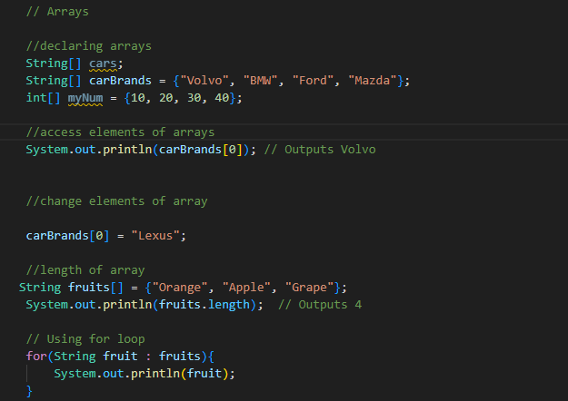

Variables
A variable is a literal assignment to an identifier Java variables have a type attached.
Using final keyword
Final means that the variable assigned cannot be changed similar to const in Javascript.
Types
Java is statically typed and also a strongly typed language because, in Java, each type of data (such as integer, character, hexadecimal, packed decimal, and so forth) is predefined as part of the programming language and all constants or variables defined for a given program must be described with one of the Java data types.
- Primitive Types
- Primitive types are Number, Strings, and Booleans. There are two special types Null and Undefined.
- Byte
- The byte data type is an 8-bit signed two’s complement integer. The byte data type is useful for saving memory in large arrays.
- Short
- The short data type is a 16-bit signed two’s complement integer. Similar to byte, a short is used when memory savings matter, especially in large arrays where space is constrained.
- Int
- It is a 32-bit signed two’s complement integer. Basically a Number w/o a decimal
- Long
- The long data type is a 64-bit signed two’s complement integer. It is used when an int is not large enough to hold a value, offering a much broader range.
- Booleans
- boolean data type represents a logical value that can be either true or false. Conceptually, it represents a single bit
- Float
- The float data type is a single-precision 32-bit Use a float (instead of double) if you need to save memory in large arrays of floating-point numbers.
- Double
- The double data type is a double-precision 64-bit IEEE 754 floating-point. For decimal values, this data type is generally the default choice.
- Char
- The char data type is a single 16-bit Unicode character with the size of 2 bytes
Primitive Types
Non-Primitive Types
Expressions
Expressions are units of code that can be evaluated and resolve to a value
- Arithmetic Expressions 
- String Expressions 
- Array 
UserInput
Grabing user input can be done by importing scanner object Declaring a variable then assiging it to the Scanner result